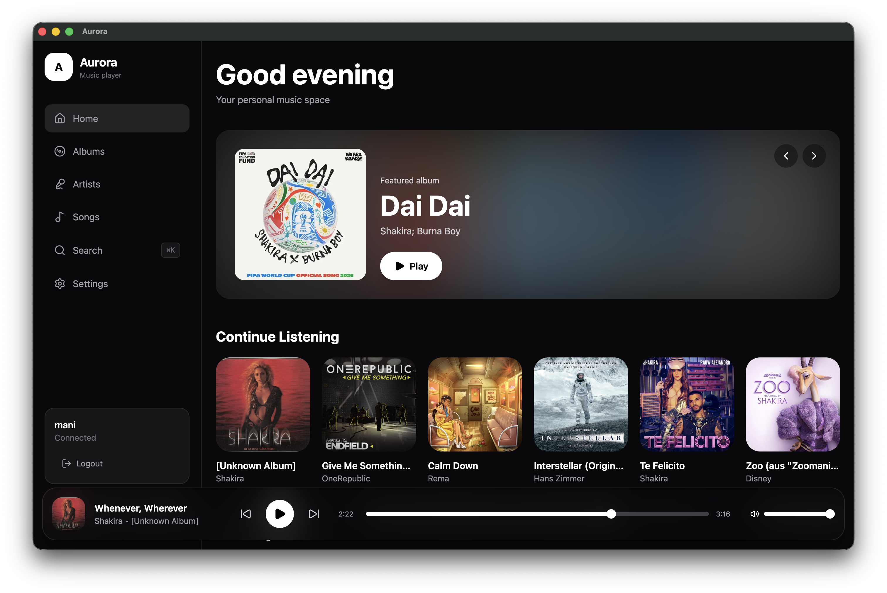
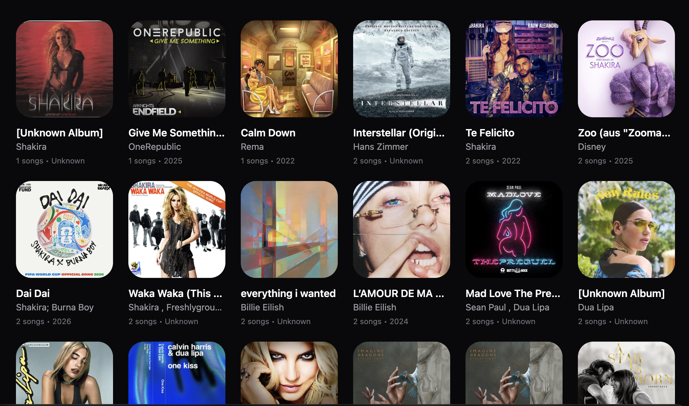
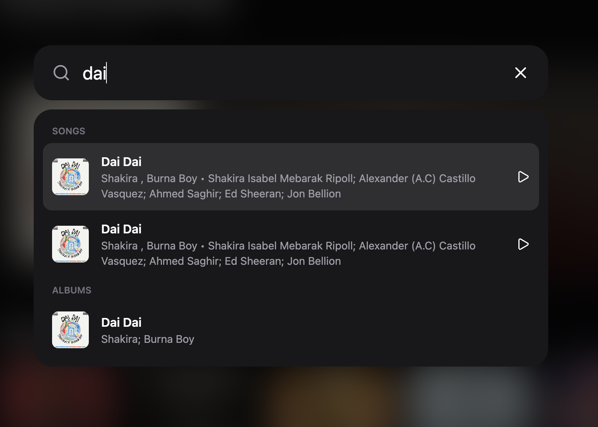
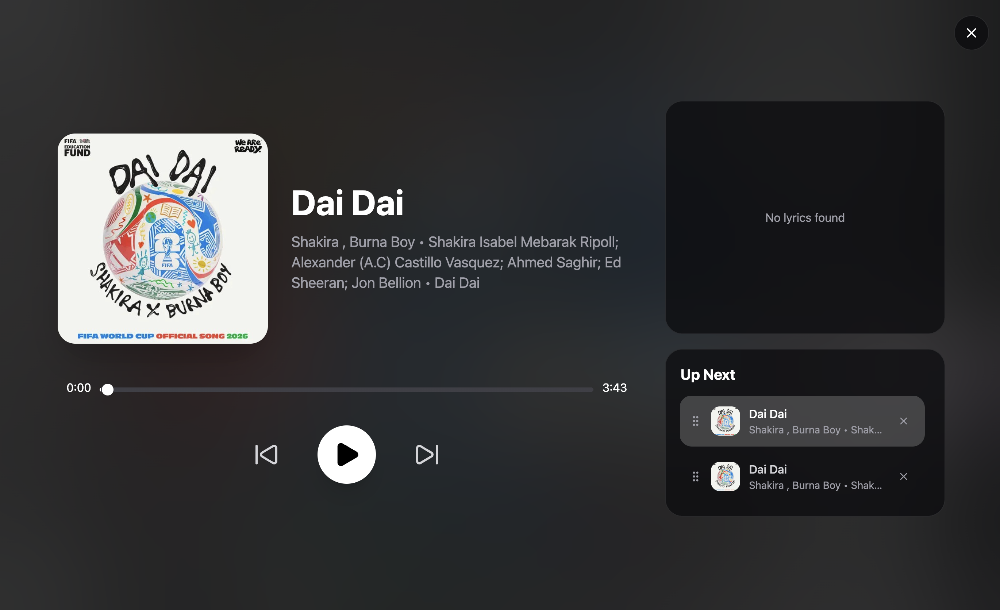
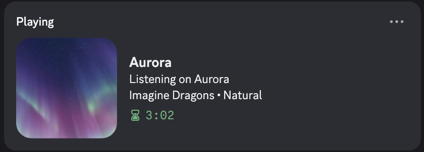

Your music.
Finally yours.
A beautiful desktop client for Navidrome and Subsonic-compatible music servers. Enjoy your private library with a modern, native experience.

Everything you need.

Your entire library.
Browse your artists, albums, and songs with a polished interface designed for your personal collection. Note that you HAVE to add songs and no songs are bundled with Aurora

Search instantly.
Find songs, albums, and artists quickly with keyboard-first navigation.

A powerful player.
Manage queues, shuffle, repeat, volume, and playback persistence with ease.
Beautiful lyrics.
Follow your favorite songs with synchronized lyrics and smooth animations.

Share what you listen to.
Discord Rich Presence lets friends see your current listening activity.
Built for self-hosters.
Aurora connects directly to your Navidrome server, keeping your music where it belongs: with you.
Get Aurora.
Available for Windows, Linux, and macOS.